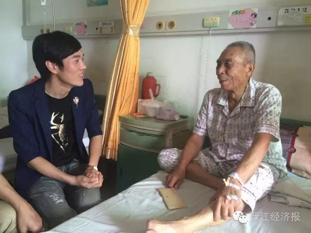

林金锏，晋江永和人。"五一"前，林金锏参加晋江市总工会举办的2016年非公企业职工"风采之星"歌手大赛，凭借不俗的唱功和精彩的表现，以一首饱含深情的歌曲《妈妈的皱纹》，在总决赛时斩获冠军。获得奖励后，他当即表示希望把奖金捐给贫困老人。
"我8岁的时候，父亲就出车祸离开了我们，是母亲一人把我们兄弟姐妹6个人拉扯长大，日子过得十分艰苦。"当被问到为何一心想要把奖金捐出去，林金锏动情地说，这样的经历，让他深切体会到母亲的艰辛和不易，也令他格外感恩母爱的伟大。他说，这首歌正表达了他对母亲的爱和感谢，同时他希望通过这一善举，帮助更多贫困家庭渡过难关。
为帮助林金锏了这个心愿，并且帮助到需要关爱的困难老人，记者在永和镇相关领导牵线下，和旦厝村党支部书记留佳友取得对接，并将捐助对象锁定为村里刚患病不久的困难老党员邓清古。
了解到年迈的邓清古在半个月前因腰背肌肉疼痛住进了晋江市医院，这让本身家庭贫困的他雪上加霜，林金锏立马决定将这笔奖金捐给邓清古，以解老人的燃眉之急。
前日下午，林金锏特意从上班的英林镇赶来青阳看望邓清古老人，并亲自把善款交到了老人手中，还陪老人话家常，关心老人身体和家庭情况。
"感谢，感谢，我真的很感动。"前日下午，在晋江市医院住院部一病房里，78岁的邓清古老人双手握住眼前这位陌生男子的手，眼里噙满泪水。
"我啊，以前当兵出身的，以为自己身体好得很，却没想到现在也要住院。"说到自己的病情，邓老伯打趣自己。而望着眼前这个前来雪中送炭的热心男子，一向乐观的他禁不住流下了激动的泪水。
邓老伯两个月前就开始出现腰痛、背部肌肉酸痛的症状，半个月前他来到市医院检查，目前只初步诊断为膀胱问题，接下来需要做手术。
邓老伯的坚强和乐观也感动了林金锏。离开了邓老伯的病房后，他也表示，自己还年轻，还有能力赚钱，希望通过自己微薄的力量，帮老人渡过难关。记者了解到，这已不是林金锏第一次做善事，此前，他也曾去惠安、东石、青阳等地参加慈善义演活动，为需要帮助的人奉献爱心。
"林金锏的这种善举确实值得我们学习和表扬。"当天，村书记留佳友也来到医院看望老人。他表示，村里也正积极向其他慈善机构寻求扶助和支持，帮助邓清古渡过难关。
